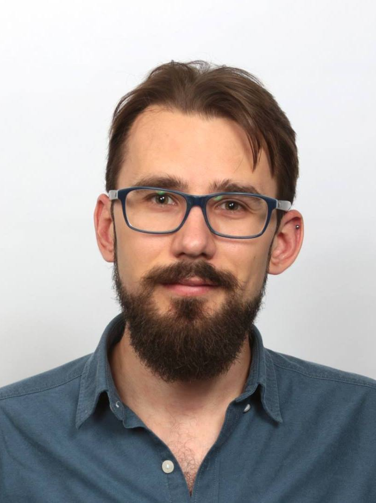

Filip Sieczkowski
I am an assistant professor at Heriot-Watt University, Edinburgh. I begun my computer science education at the University of Wrocław, working on interderivation of semantics with Dariusz Biernacki. I then moved to Denmark, first to the ITU Copenhagen, where I obtained my PhD, and then to the Aarhus University, where I worked with Lars Birkedal and his group on separation logic and relational reasoning about programs, culminating in (an early version of) the Iris framework. Afterwards I moved to Inria Paris, where I worked with Umut Acar on semantics of parallelism, and returned home to Wrocław as an assistant professor in the programming languages research group. A few years later, I moved to Scotland, where I now remain.
My research interests revolve predominantly around semantics of programming languages and modular methods of reasoning about programs. These range from separation logic — I was among the recipients of the 2023 Alonzo Church Award for Outstanding Contributions to Logic and Computation for my role in the early development of Iris — to relational models of sophisticated language features (concurrency, effect handlers, GADTs) and developments in operational semantics. These have inspired my model-driven approach to programming language design, where a model of the language and its properties influence the design choices for language features — which often leads to improved reasoning principles or stronger safety properties. Due to long-term use of interactive theorem provers, I am also interested in both practical and foundational issues related to formalised mathematics and dependently-typed programming.
Contact
- Office: EM G.26, Heriot-Watt University, Edinburgh
- Email: F.Sieczkowski@hw.ac.uk or efes@cs.uni.wroc.pl
Recent Publications
-
The Essence of Generalized Algebraic Data Types.
Filip Sieczkowski, Sergei Stepanenko, Jonathan Sterling, Lars Birkedal.
PACMPL 8(POPL), January 2024 -
A General Fine-Grained Reduction Theory for Effect Handlers.
Filip Sieczkowski, Mateusz Pyzik, Dariusz Biernacki.
PACMPL 7(ICFP), September 2023 -
Reflecting Stacked Continuations in a Fine-Grained Direct-Style Reduction Theory.
Dariusz Biernacki, Mateusz Pyzik, Filip Sieczkowski.
PPDP 2021, September 2021 -
A Reflection on Continuation-Composing Style.
Dariusz Biernacki, Mateusz Pyzik, Filip Sieczkowski.
FSCD 2020, July 2020 -
Binders by Day, Labels by Night: Effect Instances via Lexically Scoped Handlers.
Dariusz Biernacki, Maciej Piróg, Piotr Polesiuk, Filip Sieczkowski.
PACMPL 4(POPL), January 2020
Service
I have served on the Programme Committees of ICFP 2024, TYDE 2023, MFPS 2023, PPDP 2022, POPL 2022, FoSSaCS 2021, HOPE 2020 (co-chair), HOPE 2018 (co-chair), HOPE 2017, Coq Workshop 2018 and ML Family Workshop 2018
I represent Heriot-Watt in the Steering Committee of Scottish Programming Languages Institute, and have organised the 2022 edition of the Scottish Programming Languages and Verification Summer School with Kathrin Stark and Katya Komendantskaya.